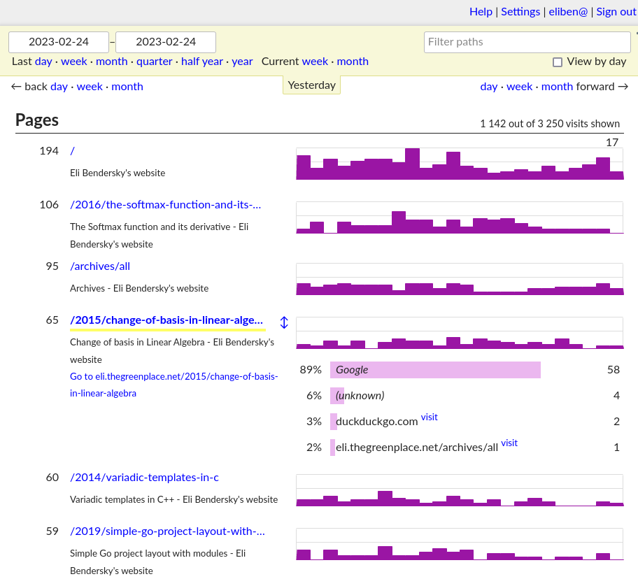

Ever since I switched this website to a static setup in 2014, I've been trying to simplify it even more. In 2018 I turned off Disqus comments, eliminating a large source of latency.
Recently, an additional effort to reduce dependencies and be more self-contained led to the replacement of Google Analytics by a self-hosted OSS analytics solution. This post describes how I set up GoatCounter to know how many people visit my website over time, which pages are the most popular, and where visitors come from (referer).
Choosing GoatCounter
When looking for an analytics solution, two categories of tools emerge pretty quickly in the research:
- Log parsers: these don't require the user's browser to make any additional requests to log the visit; rather, they parse the web server's logs in the background.
- Active analytics tools that inject some custom JS into every page; your browser runs this JS, which typically makes a parameterized request to another server to log the visit.
While log parsers have the attractive property of not requiring any additional user interaction (they are "offline", in a way), the requirement to muck with my Apache server's logs extensively gave me pause. Since I'm interested in historical logs often going back a year or more, it still requires some tool running continually on my server, ingesting logs all the time and updating some database. Overall, the process of setting this up didn't seem sufficiently simple to me - but I may have well overlooked something. Suggestions are very welcome!
Of the multitude of analytics tools, GoatCounter stood out:
- Very privacy oriented, collecting so little data that a GDPR notice isn't even required.
- Light-weight; the added JS file is only 8 KiB and the server is fast: 99.9% of requests are answered within ~2ms.
- Can be self-hosted, which both reduces the cost if I already run a server and reduces dependencies.
- OSS and written in Go. This is not just a stylistic preference; since Go builds static binaries, the goatcounter tool is trivial to download and run. Much easier deployment than, say, tools written in PHP.
Setting up GoatCounter for my website
My GoatCounter setup is self-hosted; the goatcounter server runs on the same VPS as my blog, and serves at https://stats.thegreenplace.net
Since the thegreenplace.net domain is served by Apache that listens on ports 80 and 443 on the VPS, I needed to configure Apache to reverse-proxy traffic for the stats subdomain to goatcounter. For a general explanation of how to set up such proxying, see this earlier blog post.
I started by downloading a pre-built goatcounter executable from the releases page, and then unzipping it in some directory $GOATDIR. Then ask it to create a new SQLite DB:
$ ./goatcounter-v2.4.1-linux-amd64 db -createdb create site \
-vhost=stats.thegreenplace.net -email=eliben@gmail.com
This creates $GOATDIR/db/goatcounter.sqlite3. Next, run the server itself:
$ ./goatcounter-v2.4.1-linux-amd64 serve \
db sqlite3+$GOATDIR/db/goatcounter.sqlite3 \
-listen 127.0.0.1:5000 -tls http
The goatcounter server listens on local port 5000, which is not exposed outside the VPS. Following the instructions of the aforementioned blog post, Apache can then be set up to forward traffic for the stats subdomain to this port.
If all works well, the stats subdomain should be accessible now.
Restarts and automatic backups
If the VPS reboots, I don't want to restart the goatcounter server manually. Therefore, it has to be set up as a service, by adding a new systemd configuration file at /etc/systemd/system/goatcounter.service:
# /etc/systemd/system/goatcounter.service
# Description of what the program does
[Unit]
Description=GoatCounter
[Service]
Type=simple
# If anything unexpected happens, Systemd will try to restart the program
Restart=always
# We need to send the absolute path of the database to GoatCounter.
ExecStart=$GOATDIR/goatcounter-v2.4.1-linux-amd64 serve -db sqlite3+$GOATDIR/db/goatcounter.sqlite3 -listen 127.0.0.1:5000 -tls http
[Install]
WantedBy=multi-user.target
And then the service can be started using systemctl:
$ sudo systemctl start goatcounter
$ sudo systemctl status goatcounter
● goatcounter.service - GoatCounter
Loaded: loaded (/etc/systemd/system/goatcounter.service; enabled; vendor preset: enabled)
Active: active (running) since Thu 2023-02-16 14:04:20 UTC; 1 week 1 day ago
Main PID: 732 (goatcounter-v2.)
Tasks: 16 (limit: 2324)
Memory: 135.9M
CPU: 15min 156ms
...
...
Finally, systemctl can be told to automatically run this service at startup:
$ sudo systemctl enable goatcounter
After clicking around the website for a bit, one will be able to observe that GoatCounter's DB file is being updated. This is just a SQLite database, so it can be explored using the command-line sqlite3 tool; something like:
sqlite> select * from hits order by created_at desc limit 10;
Make sure to back the DB up somewhere; I have a cron job that performs a backup to cloud storage; this can be accomplished by first asking SQLite to dump a backup file:
$ sqlite3 goatcounter.sqlite3 ".backup $BKPFILE"
With any custom filename as $BKPFILE.
Using GoatCounter
Once GoatCounter is set up and running, it's pretty easy to use. Log into its dashboard and poke around; the dashboard looks something like:
Clicking on Help on the top right leads one to a nice documentation site with lots of useful usage information. GoatCounter has many features; for example, if you prefer working with the command-line, the goatcounter binary (the same one that acts as a server) has a dashboard command that will render a dashboard to the terminal.
A feature I like a lot is the API, with a detailed reference available. This can be used to programmatically query your GoatCounter instance for all kinds of aggregates and statistics. For example, to figure out which pages on my website were the most popular during 2022, I can run:
$ curl -X GET 'https://stats.thegreenplace.net/api/v0/stats/hits?start=2022-01-01&end=2022-12-31&daily=1' \
-H 'Content-Type: application/json' \
-H 'Authorization: Bearer <TOKEN-HERE>'
(after generating an API token through the web dashboard).
This dumps a JSON file with the data, which can be easily analyzed by a program.